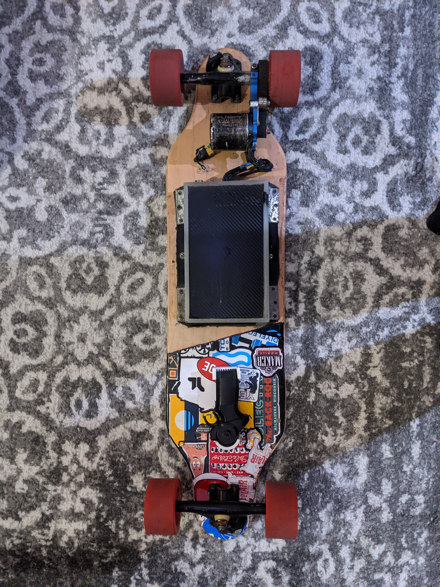
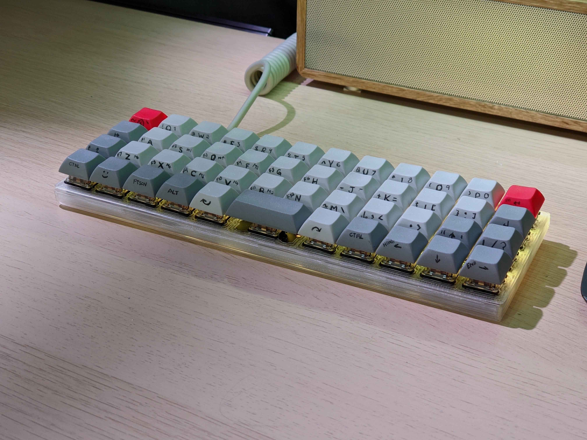

Description
Smart Mirror Display - Personal Project
Summer 2020
-Utilizing a two-way mirror, old display, and raspberry PI to create a mirror turned smart display
-Developed front end view using HTML and CSS styling
-Created modules using JavaScript and various APIs to connect to smart home devices and custom phone apps
-Modified all files using SSH tools to communicate to the device
Interactive Map Display - Volunteer Project
Jan 2019 – Mar 2019
-Created a map designed to the spec of the Jewish Museum Milwaukee
-Designed with HTML, and CSS as a base and interactive components with JS
-Developed UI elements including a slider to scroll through monthly border
changes and selectable data points with information including the story of the
exhibit’s main protagonist
DIY Electric Longboard
Summer 2018 - Current

-Incorporated mechanical, electrical and software components to design and create
a belt driven electric vehicle that travels at up to 30 mph
-Controlled with a handheld RC controller
Custom Keyboard
Winter 2020/2021

-Built a physical 40% keyboard using custom PCB and 3D printed case
-Wrote and compiled custom firmware, customizing key layout, lighting displays and intercompatibility